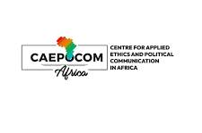
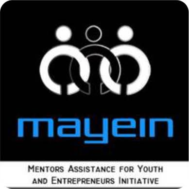
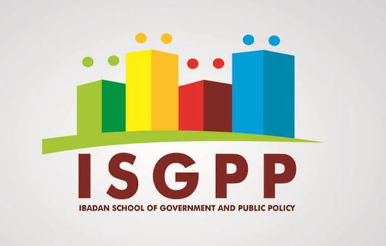

01 — Intro
About Geraldine
Hi, my name is Geraldine Ezeobi.
I'm a researcher, civic educator, and programme specialist with close to a decade of experience across gender research, women's empowerment programming, and civic education in Nigeria.
My work moves between the classroom and the field — from teaching civic education and coaching secondary school students, to coordinating research with partners like UNESCO and NATO on media literacy and disinformation.
02 — Where I've Worked
Places I've taught and led
Graceland College, Enugu State
Civic & Government Instructor / Life Coach Coordinator · 2022 – 2026
Teaches civic education and government while running weekly Life Coach Sessions on leadership, emotional intelligence, and goal-setting — with gender equity woven into classroom discourse throughout.

CAEPOCOM Africa, Ibadan
Project Coordinator · Oct 2018 – Jan 2021
Coordinated NATO's first Strategic Communications engagement on the African continent, researching disinformation in West Africa, and created "Before You Click," a media literacy initiative with UNESCO.

MAYEIN, Ibadan
Senior Programmes Associate · Feb – Jul 2021
Led gender-sensitive programming including the Girls Without Borders project, and built an ODK-based digital monitoring system for field data across youth and digital literacy programmes.

Ibadan School of Government & Public Policy
Project Officer, Public Policy Secretariat · Aug 2017 – Oct 2018
Managed governance and public policy research — including studies on Ease of Doing Business and Land Governance for DAWN Commission and DFID — and coordinated the ISGPP Junior Research Fellowship.
03 — Education
Academic background
MA, African Studies (Gender Studies)
Thesis: Psycho-social Effects of Boy Child Neglect in Awka — an original contribution to gender equity discourse examining masculinity, neglect, and societal expectations in Nigeria.
BSc, Political Science
Research project: Identity Politics and Conflict in Nigeria's Fourth Republic.
Diploma, Mass Communication
Research project: Citizen Journalism and Crises in Nigeria. Also served as Programme Assistant on the UNIZIK FM Morning Show.
04 — Side Projects
Things I've built on the side
Before You Click
Media literacy campaignOriginated, scripted, and presented a media literacy initiative confronting gendered disinformation and online safety among Nigerian youth.
Social Media Manipulation in West Africa
Research studyCoordinated landmark field research into disinformation — NATO's first Strategic Communications engagement on the African continent.
Girls Without Borders
Empowerment programmeReached young women excluded from mainstream opportunities using participatory approaches, backed by an ODK-based monitoring framework she designed.
05 — Contact
Get in touch
Reach out about speaking, workshops, or collaborating on civic and gender education projects.
Download full CV (PDF)